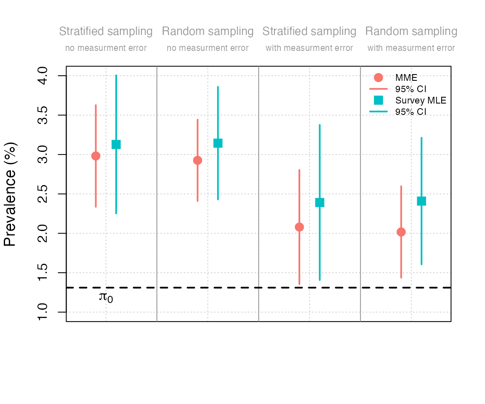
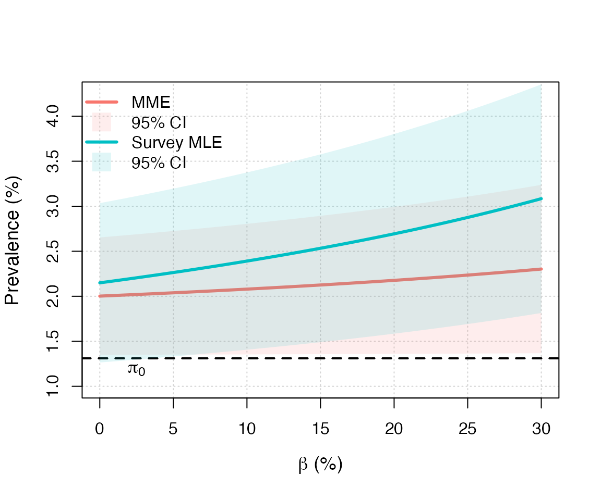

We use the methodology developed in this paper for the case of the COVID-19 prevalence estimation using the results of a survey done in November 2020 by Statistics Austria (2020). We also compare the different approaches, in order to illustrate, in practice, the impact of choosing one method rather than another one. In November 2020, a survey sample of \(n=2287\) was collected to test for COVID-19 using PCR-tests. Seventy-two participants were tested positive, and among these ones, thirty-five (\(R_1=35\)) had declared to have been tested positive with the official procedure, during the same month. In November, there were \(93914\) declared cases among the official (approximately) \(7166167\) inhabitants in Austria (above 16 years old), so that \(\pi_0 \approx 1.3105\%\). The sensitivity (\(1-\alpha\)) and the specificity (\(1-\beta\)) are not known with precision, so that we present estimates of the prevalence without misclassification error as well as for values for the FP and FN rates, that are plausible given the data and according to the sensitivity and specificity reported in or .
The results presented in Table 1 of Guerrier, Kuzmics, and Victoria-Feser (2022) can be reproduced as follows:
# Load pempi
library(pempi)
# Austrian data (November 2020)
pi0 = 93914/7166167
# Load data
data("covid19_austria")
# Random sampling
n = nrow(covid19_austria)
R1 = sum(covid19_austria$Y == 1 & covid19_austria$Z == 1)
R2 = sum(covid19_austria$Y == 0 & covid19_austria$Z == 1)
R3 = sum(covid19_austria$Y == 1 & covid19_austria$Z == 0)
R4 = sum(covid19_austria$Y == 0 & covid19_austria$Z == 0)
# Weighted sampling
R1w = sum(covid19_austria$weights[covid19_austria$Y == 1 & covid19_austria$Z == 1])
R2w = sum(covid19_austria$weights[covid19_austria$Y == 0 & covid19_austria$Z == 1])
R3w = sum(covid19_austria$weights[covid19_austria$Y == 1 & covid19_austria$Z == 0])
R4w = sum(covid19_austria$weights[covid19_austria$Y == 0 & covid19_austria$Z == 0])
# Print table
data_mat = matrix(c(R1w, R2w, R3w, R4w, R1, R2, R3, R4), 2, 4, byrow = TRUE)
rownames(data_mat) = c("Weighted sampling", "Unweighted sampling")
colnames(data_mat) = c("R1 (R11)", "R2 (R10)", "R3 (R01)", "R4 (R00)")
knitr::kable(round(data_mat, 4))| R1 (R11) | R2 (R10) | R3 (R01) | R4 (R00) | |
|---|---|---|---|---|
| Weighted sampling | 33.3589 | 0 | 38.2712 | 2218.37 |
| Unweighted sampling | 35.0000 | 0 | 37.0000 | 2218.00 |
The data can be summarized as follows:
R1 in the package).R1 or R1w in the package).R2 in the package).R2 or R2w in the package).R3 in the package).R3 or R3w in the package).R4 in the package).R4 or R4w in the package).We can check that \(R_{11} + R_{10} + R_{01} + R_{00} = n\)
R1 + R2 + R3 + R4## [1] 2290and \(\bar{R}_{11} + \bar{R}_{10} + \bar{R}_{01} + \bar{R}_{00} = n\)
R1w + R2w + R3w + R4w## [1] 2290For the analysis we consider the possibility of measurement error, in which we use the following values:
# Measurement error
alpha0 = 0
alpha = 1/100
beta = 10/100The Survey MLE (with and without measurement error) can be compute as follows:
# Survey MLE without measurement error
(smle_no_meas_error_random = survey_mle(R = R1 + R3, n = n))## Method: Survey MLE
##
## Estimated proportion: 3.1441%
## Standard error : 0.3647%
##
## Confidence intervals at the 95% level:
## Asymptotic Approach: 2.4294% - 3.8588%
## Clopper-Pearson : 2.4680% - 3.9433%
##
## Assumed measurement error: alpha = 0%, beta = 0%
## Sampling: Random
# Survey MLE with measurement error (as defined above)
(smle_with_meas_error_random = survey_mle(R = R1 + R3, n = n,
alpha = alpha, beta = beta))## Method: Survey MLE
##
## Estimated proportion: 2.4091%
## Standard error : 0.4097%
##
## Confidence intervals at the 95% level:
## Asymptotic Approach: 1.6060% - 3.2122%
## Clopper-Pearson : 1.6495% - 3.3070%
##
## Assumed measurement error: alpha = 1%, beta = 10%
## Sampling: RandomIn the case of a stratified sampling, the Survey MLE (with and without measurement error) can be compute as follows:
# Survey (weighted) MLE without measurement error
(smle_no_meas_error_strat = survey_mle(R = R1w + R3w, n = n,
V = mean(covid19_austria$weights^2)))## Method: Survey MLE
##
## Estimated proportion: 3.1280%
## Standard error : 0.4471%
##
## Confidence interval at the 95% level:
## Asymptotic Approach: 2.2517% - 4.0042%
##
## Assumed measurement error: alpha = 0%, beta = 0%
## Sampling: Stratified with V = 1.51
# Survey MLE with measurement error (as defined above)
(smle_with_meas_error_strat = survey_mle(R = R1w + R3w, n = n,
alpha = alpha, beta = beta,
V = mean(covid19_austria$weights^2)))## Method: Survey MLE
##
## Estimated proportion: 2.3910%
## Standard error : 0.5023%
##
## Confidence interval at the 95% level:
## Asymptotic Approach: 1.4064% - 3.3755%
##
## Assumed measurement error: alpha = 1%, beta = 10%
## Sampling: Stratified with V = 1.51In the case of a random sampling, the moment-based estimator or MME (with and without measurement error) can be compute as follows:
# MME without measurement error
(mme_no_meas_error_random = moment_estimator(R3 = R3, n = n,
pi0 = pi0))## Method: Moment Estimator
##
## Estimated proportion: 2.9262%
## Standard error : 0.2635%
##
## Confidence intervals at the 95% level:
## Asymptotic Approach: 2.4099% - 3.4426%
## Clopper-Pearson : 2.4506% - 3.5308%
##
## Assumed measurement error: alpha = 0%, beta = 0%,
## alpha0 = 0%
##
## Estimated false negative rate of the
## official procedure: beta0 = 55.21%
## CI at the 95% level: 47.31% - 63.12%
## Sampling: Random
# MME with measurement error (as defined above)
(mme_with_meas_error_random = moment_estimator(R3 = R3, n = n,
pi0 = pi0, alpha = alpha,
beta = beta, alpha0 = alpha0))## Method: Moment Estimator
##
## Estimated proportion: 2.0171%
## Standard error : 0.2960%
##
## Confidence intervals at the 95% level:
## Asymptotic Approach: 1.4369% - 2.5973%
## Clopper-Pearson : 1.4827% - 2.6963%
##
## Assumed measurement error: alpha = 1%, beta = 10%,
## alpha0 = 0%
##
## Estimated false negative rate of the
## official procedure: beta0 = 35.03%
## CI at the 95% level: 16.34% - 53.72%
## Sampling: RandomIn the case of a stratified sampling, the MME (with and without measurement error) can be compute as follows:
# MME without measurement error
(mme_no_meas_error_strat = moment_estimator(R3 = R3w, n = n,
pi0 = pi0,
V = mean(covid19_austria$weights^2)))## Method: Moment Estimator
##
## Estimated proportion: 2.9818%
## Standard error : 0.3292%
##
## Confidence interval at the 95% level:
## Asymptotic Approach: 2.3365% - 3.6270%
##
## Assumed measurement error: alpha = 0%, beta = 0%,
## alpha0 = 0%
##
## Estimated false negative rate of the
## official procedure: beta0 = 56.05%
## CI at the 95% level: 46.54% - 65.56%
## Sampling: Stratified with V = 1.51
# MME with measurement error (as defined above)
(mme_with_meas_error_strat = moment_estimator(R3 = R3w, n = n,
pi0 = pi0, alpha = alpha, beta = beta,
alpha0 = alpha0,
V = mean(covid19_austria$weights^2)))## Method: Moment Estimator
##
## Estimated proportion: 2.0794%
## Standard error : 0.3699%
##
## Confidence interval at the 95% level:
## Asymptotic Approach: 1.3544% - 2.8045%
##
## Assumed measurement error: alpha = 1%, beta = 10%,
## alpha0 = 0%
##
## Estimated false negative rate of the
## official procedure: beta0 = 36.98%
## CI at the 95% level: 15.00% - 58.95%
## Sampling: Stratified with V = 1.51In the case of a random sampling, the conditional MLE or CMLE (with and without measurement error) can be compute as follows:
# CMLE without measurement error
(cmle_no_meas_error_random = conditional_mle(R1 = R1, R2 = R2,
R3 = R3, R4 = R4, pi0 = pi0))## Method: Conditional MLE
##
## Estimated proportion: 2.9317%
## Standard error : 0.2639%
##
## Confidence interval at the 95% level:
## Asymptotic Approach: 2.4145% - 3.4489%
##
## Assumed measurement error: alpha = 0%, beta = 0%,
## alpha0 = 0%
##
## Estimated false negative rate of the
## official procedure: beta0 = 55.30%
## CI at the 95% level: 47.41% - 63.18%
## Sampling: Random
# CMLE with measurement error (as defined above)
(cmle_with_meas_error_random = conditional_mle(R1 = R1, R2 = R2,
R3 = R3, R4 = R4, pi0 = pi0,
alpha = alpha, beta = beta,
alpha0 = alpha0))## Method: Conditional MLE
##
## Estimated proportion: 2.0200%
## Standard error : 0.2962%
##
## Confidence interval at the 95% level:
## Asymptotic Approach: 1.4394% - 2.6006%
##
## Assumed measurement error: alpha = 1%, beta = 10%,
## alpha0 = 0%
##
## Estimated false negative rate of the
## official procedure: beta0 = 35.12%
## CI at the 95% level: 16.48% - 53.77%
## Sampling: RandomIn the case of a stratified sampling, the CMLE (with and without measurement error) can be compute as follows:
# CMLE without measurement error
(cmle_no_meas_error_strat = conditional_mle(R1 = R1w, R2 = R2w,
R3 = R3w, R4 = R4w, pi0 = pi0,
V = mean(covid19_austria$weights^2)))## Method: Conditional MLE
##
## Estimated proportion: 2.9841%
## Standard error : 0.3294%
##
## Confidence interval at the 95% level:
## Asymptotic Approach: 2.3385% - 3.6297%
##
## Assumed measurement error: alpha = 0%, beta = 0%,
## alpha0 = 0%
##
## Estimated false negative rate of the
## official procedure: beta0 = 56.08%
## CI at the 95% level: 46.58% - 65.59%
## Sampling: Stratified with V = 1.51
# CMLE with measurement error (as defined above)
(cmle_with_meas_error_strat = conditional_mle(R1 = R1w, R2 = R2w,
R3 = R3w, R4 = R4w, n = n, pi0 = pi0,
alpha = alpha, beta = beta,
alpha0 = alpha0,
V = mean(covid19_austria$weights^2)))## Method: Conditional MLE
##
## Estimated proportion: 2.0831%
## Standard error : 0.3702%
##
## Confidence interval at the 95% level:
## Asymptotic Approach: 1.3574% - 2.8087%
##
## Assumed measurement error: alpha = 1%, beta = 10%,
## alpha0 = 0%
##
## Estimated false negative rate of the
## official procedure: beta0 = 37.09%
## CI at the 95% level: 15.17% - 59.00%
## Sampling: Stratified with V = 1.51In the case of a random sampling, the marginal MLE or MMLE (with and without measurement error) can be compute as follows:
# MMLE without measurement error
(mmle_no_meas_error_random = marginal_mle(R1 = R1, R3 = R3, n = n, pi0 = pi0))## Method: Marginal MLE
##
## Estimated proportion: 2.9317%
## Standard error : 0.2639%
##
## Confidence interval at the 95% level:
## Asymptotic Approach: 2.4145% - 3.4489%
##
## Assumed measurement error: alpha = 0%, beta = 0%,
## alpha0 = 0%
##
## Estimated false negative rate of the
## official procedure: beta0 = 55.30%
## CI at the 95% level: 47.41% - 63.18%
## Sampling: Random
# MMLE with measurement error (as defined above)
(mmle_with_meas_error_random = marginal_mle(R1 = R1, R3 = R3, n = n, pi0 = pi0, alpha = alpha, beta = beta, alpha0 = alpha0))## Method: Marginal MLE
##
## Estimated proportion: 2.0200%
## Standard error : 0.2962%
##
## Confidence interval at the 95% level:
## Asymptotic Approach: 1.4394% - 2.6006%
##
## Assumed measurement error: alpha = 1%, beta = 10%,
## alpha0 = 0%
##
## Estimated false negative rate of the
## official procedure: beta0 = 35.12%
## CI at the 95% level: 16.48% - 53.77%
## Sampling: RandomTable 2 can be replicated as follows:
table2 = matrix(NA, 6, 6)
rownames(table2) = c("SMLE (stratified)", "MME (stratified)", "Estimated beta0 (stratified)", "SMLE (random)", "MME (random)", "Estimated beta0 (random)")
colnames(table2) = c("Estimates (no meas. err.)", "95% CI (low)", "95% CI (high)", "Estimates (with meas. err.)", "95% CI (low)", "95% CI (high)")
table2[1, ] = 100*c(smle_no_meas_error_strat$estimate,
smle_no_meas_error_strat$ci_asym,
smle_with_meas_error_strat$estimate,
smle_with_meas_error_strat$ci_asym)
table2[2, ] = 100*c(mme_no_meas_error_strat$estimate,
mme_no_meas_error_strat$ci_asym,
mme_with_meas_error_strat$estimate,
mme_with_meas_error_strat$ci_asym)
table2[3, ] = 100*c(mme_no_meas_error_strat$beta0,
mme_no_meas_error_strat$ci_beta0,
mme_with_meas_error_strat$beta0,
mme_with_meas_error_strat$ci_beta0)
table2[4, ] = 100*c(smle_no_meas_error_random$estimate,
smle_no_meas_error_random$ci_asym,
smle_with_meas_error_random$estimate,
smle_with_meas_error_random$ci_asym)
table2[5, ] = 100*c(mme_no_meas_error_random$estimate,
mme_no_meas_error_random$ci_asym,
mme_with_meas_error_random$estimate,
mme_with_meas_error_random$ci_asym)
table2[6, ] = 100*c(mme_no_meas_error_random$beta0,
mme_no_meas_error_random$ci_beta0,
mme_with_meas_error_random$beta0,
mme_with_meas_error_random$ci_beta0)
knitr::kable(round(table2, 3))| Estimates (no meas. err.) | 95% CI (low) | 95% CI (high) | Estimates (with meas. err.) | 95% CI (low) | 95% CI (high) | |
|---|---|---|---|---|---|---|
| SMLE (stratified) | 3.128 | 2.252 | 4.004 | 2.391 | 1.406 | 3.375 |
| MME (stratified) | 2.982 | 2.336 | 3.627 | 2.079 | 1.354 | 2.804 |
| Estimated beta0 (stratified) | 56.049 | 46.537 | 65.560 | 36.977 | 15.003 | 58.951 |
| SMLE (random) | 3.144 | 2.429 | 3.859 | 2.409 | 1.606 | 3.212 |
| MME (random) | 2.926 | 2.410 | 3.443 | 2.017 | 1.437 | 2.597 |
| Estimated beta0 (random) | 55.215 | 47.312 | 63.118 | 35.028 | 16.339 | 53.718 |
Figure 1 can be obtained by running the file
pempi/figures/case_study.Rnw. A similar base R version can
be obtained as follows:
pi0 = 93914/7166167
cols = c("#F8766DFF", "#00BFC4FF")
delta = 0.1
cex_pt = 1.5
lwd_ci = 2
pch_mme = 16
pch_smle = 15
plot(NA, xlim = c(0.75, 4.25), ylim = c(1, 4), axes = FALSE, ann = FALSE)
grid()
box()
col_text = "grey60"
cex_text = 0.85
cex_text2 = 0.65
abline(v = c(1.5, 2.5, 3.5), col = col_text)
axis(2)
mtext("Stratified sampling", side = 3, line = 1.75, cex = cex_text, at = 1, col = col_text)
mtext("no measurment error", side = 3, line = 0.75, cex = cex_text2, at = 1, col = col_text)
mtext("Random sampling", side = 3, line = 1.75, cex = cex_text, at = 2, col = col_text)
mtext("no measurment error", side = 3, line = 0.75, cex = cex_text2, at = 2, col = col_text)
mtext("Stratified sampling", side = 3, line = 1.75, cex = cex_text, at = 3, col = col_text)
mtext("with measurment error", side = 3, line = 0.75, cex = cex_text2, at = 3, col = col_text)
mtext("Random sampling", side = 3, line = 1.75, cex = cex_text, at = 4, col = col_text)
mtext("with measurment error", side = 3, line = 0.75, cex = cex_text2, at = 4, col = col_text)
mtext("Prevalence (%)", side = 2, line = 3, cex = 1.15)
abline(h = 100*pi0, lwd = 2, lty = 2)
text(1, 1.18, expression(pi[0]), cex = 1.15)
legend("topright", c("MME", "95% CI",
"Survey MLE", "95% CI"),
bty = "n", col = c(cols[1], cols[1], cols[2], cols[2]),
lwd = c(NA, lwd_ci, NA, lwd_ci), pch = c(pch_mme, NA, pch_smle, NA),
pt.cex = 1.5, cex = 0.7)
# 1) Stratified sampling, without ME
points(1 - delta, 100*mme_no_meas_error_strat$estimate, col = cols[1], pch = pch_mme, cex = cex_pt)
lines(c(1, 1) - delta, 100*mme_no_meas_error_strat$ci_asym, col = cols[1], lwd = lwd_ci)
points(1 + delta, 100*smle_no_meas_error_strat$estimate, col = cols[2], pch = pch_smle, cex = cex_pt)
lines(c(1, 1) + delta, 100*smle_no_meas_error_strat$ci_asym, col = cols[2], lwd = lwd_ci)
# 2) Random sampling, without ME
points(2 - delta, 100*mme_no_meas_error_random$estimate, col = cols[1], pch = pch_mme, cex = cex_pt)
lines(c(2, 2) - delta, 100*mme_no_meas_error_random$ci_asym, col = cols[1], lwd = lwd_ci)
points(2 + delta, 100*smle_no_meas_error_random$estimate, col = cols[2], pch = pch_smle, cex = cex_pt)
lines(c(2, 2) + delta, 100*smle_no_meas_error_random$ci_asym, col = cols[2], lwd = lwd_ci)
# 3) Stratified sampling, with ME
points(3 - delta, 100*mme_with_meas_error_strat$estimate, col = cols[1], pch = pch_mme, cex = cex_pt)
lines(c(3, 3) - delta, 100*mme_with_meas_error_strat$ci_asym, col = cols[1], lwd = lwd_ci)
points(3 + delta, 100*smle_with_meas_error_strat$estimate, col = cols[2], pch = pch_smle, cex = cex_pt)
lines(c(3, 3) + delta, 100*smle_with_meas_error_strat$ci_asym, col = cols[2], lwd = lwd_ci)
# 4) Random sampling, with ME
points(4 - delta, 100*mme_with_meas_error_random$estimate, col = cols[1], pch = pch_mme, cex = cex_pt)
lines(c(4, 4) - delta, 100*mme_with_meas_error_random$ci_asym, col = cols[1], lwd = lwd_ci)
points(4 + delta, 100*smle_with_meas_error_random$estimate, col = cols[2], pch = pch_smle, cex = cex_pt)
lines(c(4, 4) + delta, 100*smle_with_meas_error_random$ci_asym, col = cols[2], lwd = lwd_ci)
Figure 2 can be obtained by running the file
pempi/figures/case_study.Rnw. A similar base R version can
be obtained as follows:
# Assumptions
pi0 = 93914/7166167
alpha = 1/100
alpha0 = 0
m = 300
beta = seq(from = 0, to = 30, length.out = m)/100
res_moment = res_smle = matrix(NA, m, 3)
V = mean(covid19_austria$weights^2)
for (i in 1:m){
# Moment estimator
inter = moment_estimator(R3 = R3w, n = n, pi0 = pi0,
alpha = alpha, alpha0 = alpha0,
beta = beta[i], V = V)
res_moment[i,] = c(inter$estimate, inter$ci_asym)
# Survey MLE
inter = survey_mle(R = R1w + R3w, n = n, pi0 = pi0,
alpha = alpha, alpha0 = alpha0,
beta = beta[i], V = V)
res_smle[i,] = c(inter$estimate, inter$ci_asym)
}
cols = c("#F8766DFF", "#00BFC4FF")
cols2 = c("#F8766D1F", "#00BFC41F")
plot(NA, xlim = 100*range(beta), ylim = c(1, 4.25), axes = FALSE, ann = FALSE)
grid()
box()
axis(1)
axis(2)
mtext(expression(paste(beta, " (%)")), side = 1, line = 3, cex = 1.15)
mtext("Prevalence (%)", side = 2, line = 3, cex = 1.15)
abline(h = 100*pi0, lwd = 2, lty = 2)
abline(h = 100*pi0, lwd = 2, lty = 2)
text(2.5, 1.18, expression(pi[0]), cex = 1.15)
legend("topleft", c("MME", "95% CI",
"Survey MLE", "95% CI"),
bty = "n", col = c(cols[1], cols2[1],cols[2], cols2[2]),
lwd = c(3, NA, 3, NA), pch = c(NA, 15, NA, 15),
pt.cex = 2.5)
lines(100*beta, 100*res_moment[,1], lwd = 3, col = cols[1])
polygon(100*c(beta, rev(beta)),
100*c(res_moment[,2], rev(res_moment[,3])),
col = cols2[1], border = NA)
lines(100*beta, 100*res_smle[,1], lwd = 3, col = cols[2])
polygon(100*c(beta, rev(beta)),
100*c(res_smle[,2], rev(res_smle[,3])),
col = cols2[2], border = NA)
The results summarized in Appendix C and presented in Appendix D of Guerrier, Kuzmics, and Victoria-Feser (2022) can be replicated as follows:
pempi/simulations/simulation_script.R which
should take a couple of hours on a standard laptop and generate the file
pempi/simulations/simulations.RData.pempi/simulations/figures.Rnw (which reads
pempi/simulations/simulations.RData) to generates Figures 3,
4 and 5 (as well as color versions of these figures).